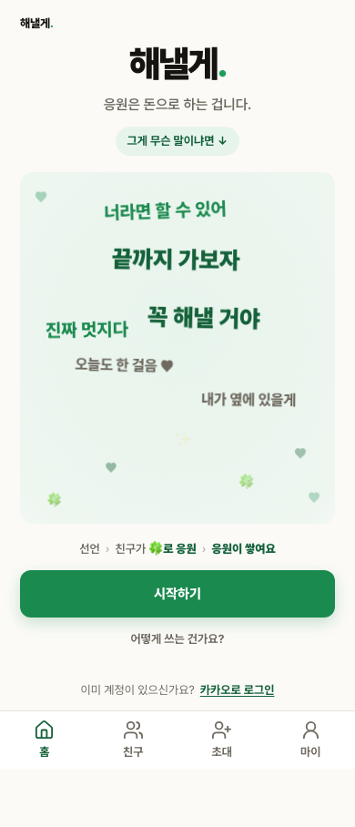

G4-AUTH Kakao OAuth 실제 검증
무료 staging의 실제 OAuth 시작·callback·보호 라우트를 대상으로 실행했습니다. 제품 인증 코드는 이미 승인 설계대로 연결돼 있어 재구현하지 않고, 누락됐던 실제 Kakao E2E를 추가했습니다.
슬라이스 판정: BLOCKED · 실제 Kakao 계정 재로그인 필요
BLOCKEDG4-AUTH-01 실제 계정 성공 왕복
PASSG4-AUTH-02 취소·state·비인증 경계
307비인증
/my → /?next=/my0비인증 Supabase 세션·개인정보 DOM
EXIT 0기준 회귀, 새 실패 0
G4-AUTH-02 실제 UI와 서버 결과

사용자 취소 뒤 landing 복귀 실제 staging callback에 유효한 1회용 state와access_denied를 전달한 결과입니다.
- 취소 callback은
/?auth_error=cancelled로 복귀하고 재로그인 링크가 노출됐습니다. - 잘못된 state와 가짜 code는 HTTP 307,
auth_error=invalid_state, 세션 쿠키 0으로 거부됐습니다. - 비인증
/my는 HTTP 307과 정확한next=/my를 반환했고, 마이페이지 개인정보 DOM은 0건입니다. - Playwright headless 실행은 1/1 PASS, console·page error 0입니다.
G4-AUTH-01 외부 차단 증거
- haenael 전용 Chrome에서 Kakao 쿠키 13개를 값 노출 없이 읽어 headless 컨텍스트에 주입했습니다.
- 실제 Kakao authorize 화면은 계정 비밀번호 입력을 요구했고 테스트는
external_kakao_session_expired로 종료됐습니다. - 메인 Chrome의 최소 쿠키 프로필을 복제한 두 번째 headless 시도도 제한시간 안에 사용할 수 있는 세션을 만들지 못했고, 생성한 임시 프로필과 프로세스는 정리했습니다.
- 따라서 Kakao 동의 → callback → Supabase 세션 →
/my성공 왕복은 PASS로 승격하지 않았습니다.
소스와 기준
G4-AUTH-02와 로컬 기준 회귀는 PASS지만 G4-AUTH-01이 외부 재로그인 대기이므로 슬라이스 전체는 BLOCKED입니다. 작업 브랜치 push는 현재 세션의 외부쓰기 정책이 실행 전에 차단해 원격 CI는 미실행입니다. 전체 제품 QA, 운영 배포, 다음 결제 슬라이스는 진행하지 않았습니다.